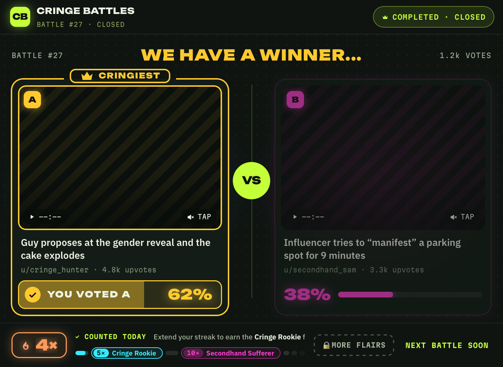
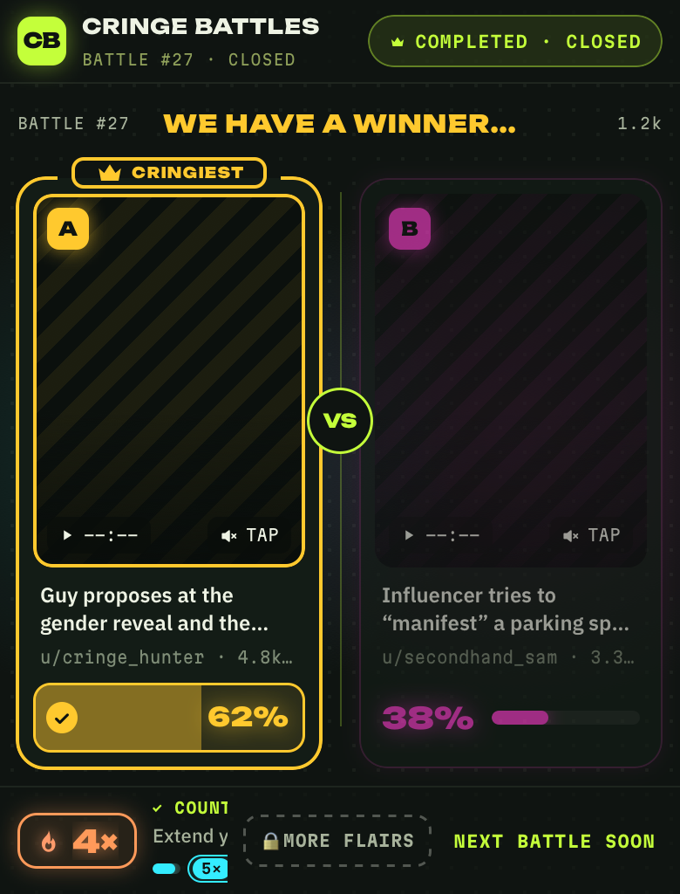
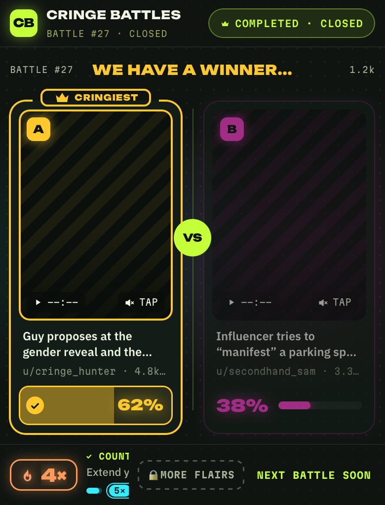

Closed winner screen: VS back to the dark disc, no glow (v0.0.45)
REDRAWN, NOT A SCREENSHOT These images are not captures of the running game. Each one is the real Battle React component with Battle #27 data (A wins 62/38, 1.2k votes), laid out with the app’s real built CSS from this commit. WebKit, Safari’s engine, painted them through Playwright on a macOS GitHub runner, at each size. Entrance animations are shown finished. The clip thumbnails are placeholders because a still has no video. The app’s own fonts load from local files. The v0.0.44 “before” set went through the same pipeline from commit c0f8637.
What changed since v0.0.44 (Margaret: “the vs just needs to be solid black with a stroke, like it already is in e.g. mobile view”):
- VS on a closed battle with a winner: no more lime disc. It now uses the live VS fill, ring and text: an opaque dark
#0F1411fill (var(--bg),opacity: 1), a1.5px solid #C4FF3Aring, and lime#C4FF3A“VS” in Unbounded 900 at 15px (11px on phones). The disc is 52px (38px on phones). - Still flat: no outer glow, inner glow or text glow (
box-shadow: none; text-shadow: none), and no pulse rings. The live VS keeps its halo, so the winner screen doesn’t. - Opaque: the frame strokes, the YOUR PICK stroke and the divider don’t show through the circle (see the pixel check below).
- Divider: stays the flat 25% lime line from v0.0.44, not the old gradient. It reads cleanly as a thin line running into and out of the dark disc, and it matches the flat screen.
- Unchanged: the VS layering (
z-index: 5, above both cards, every stroke and the badge, below TAP FOR SOUND, the reveal and a focused card), the CRINGIEST badge outline and 8px frame gap, the title, the strokes, YOUR PICK / YOU VOTED, the footer, the reveal and reduced motion. Live and tie keep the glowing VS.
Picked the winner · inline 700×512

Before (v0.0.44) · picked the winner · inline 700×512

Phone width · 390×512


Picked the loser · inline 700×512 and phone


Didn’t vote · inline 700×512

Full screen · 1100×760


Pixel check (WebKit, 2× device pixels)
Fill: the colour at 78% of the radius above the text, and the share of fill pixels (inside the ring, outside the text box) that are exactly #0F1411 (within 2/255). Opaque: we painted the page again with every card stroke and the badge hidden, and again with only the divider hidden, then compared the pixels inside the disc. If the fill is opaque, nothing changes. We also counted gold #FFC92E pixels inside the disc. Ring: the colour at the middle of the 1.5px ring, top side, and the share of the ring’s middle device-pixel band that is lime. For v0.0.44 the ring reads lime because the whole disc was lime. raw json
| state | fill | fill px #0F1411 | px changed by strokes | px changed by divider | gold px in VS | ring (top · band lime) | glow (box / text) | VS z | VS on top |
|---|---|---|---|---|---|---|---|---|---|
| fullscreen-picked-loser--fullscreen-1100x760 | (15, 20, 17) | 4497/4497 ✓ | 0 / 8173 | 0 | 0 | (196, 255, 58) · 438/438 (100.0%) ✓ | none / none | 5 | ✓ |
| fullscreen-picked-winner--fullscreen-1100x760 | (15, 20, 17) | 4497/4497 ✓ | 0 / 8173 | 0 | 0 | (196, 255, 58) · 438/438 (100.0%) ✓ | none / none | 5 | ✓ |
| no-vote--inline-700x512 | (15, 20, 17) | 4497/4497 ✓ | 0 / 8173 | 0 | 0 | (196, 255, 58) · 438/438 (100.0%) ✓ | none / none | 5 | ✓ |
| picked-loser--inline-700x512 | (15, 20, 17) | 4497/4497 ✓ | 0 / 8173 | 0 | 0 | (196, 255, 58) · 438/438 (100.0%) ✓ | none / none | 5 | ✓ |
| picked-loser--phone-390x512 | (15, 20, 17) | 2017/2017 ✓ | 0 / 4293 | 0 | 0 | (196, 255, 58) · 306/306 (100.0%) ✓ | none / none | 5 | ✓ |
| picked-winner--inline-700x512 | (15, 20, 17) | 4497/4497 ✓ | 0 / 8173 | 0 | 0 | (196, 255, 58) · 438/438 (100.0%) ✓ | none / none | 5 | ✓ |
| picked-winner--phone-390x512 | (15, 20, 17) | 2017/2017 ✓ | 0 / 4293 | 0 | 0 | (196, 255, 58) · 306/306 (100.0%) ✓ | none / none | 5 | ✓ |
| v0.0.44 · fullscreen-picked-loser--fullscreen-1100x760 | (196, 255, 58) | 0/4497 ✗ | 0 / 8173 | 0 | 0 | (196, 255, 58) · 438/438 (100.0%) ✓ | none / none | 5 | ✓ |
| v0.0.44 · fullscreen-picked-winner--fullscreen-1100x760 | (196, 255, 58) | 0/4497 ✗ | 0 / 8173 | 0 | 0 | (196, 255, 58) · 438/438 (100.0%) ✓ | none / none | 5 | ✓ |
| v0.0.44 · no-vote--inline-700x512 | (196, 255, 58) | 0/4497 ✗ | 0 / 8173 | 0 | 0 | (196, 255, 58) · 438/438 (100.0%) ✓ | none / none | 5 | ✓ |
| v0.0.44 · picked-loser--inline-700x512 | (196, 255, 58) | 0/4497 ✗ | 0 / 8173 | 0 | 0 | (196, 255, 58) · 438/438 (100.0%) ✓ | none / none | 5 | ✓ |
| v0.0.44 · picked-loser--phone-390x512 | (196, 255, 58) | 0/2017 ✗ | 0 / 4293 | 0 | 0 | (196, 255, 58) · 306/306 (100.0%) ✓ | none / none | 5 | ✓ |
| v0.0.44 · picked-winner--inline-700x512 | (196, 255, 58) | 0/4497 ✗ | 0 / 8173 | 0 | 0 | (196, 255, 58) · 438/438 (100.0%) ✓ | none / none | 5 | ✓ |
| v0.0.44 · picked-winner--phone-390x512 | (196, 255, 58) | 0/2017 ✗ | 0 / 4293 | 0 | 0 | (196, 255, 58) · 306/306 (100.0%) ✓ | none / none | 5 | ✓ |